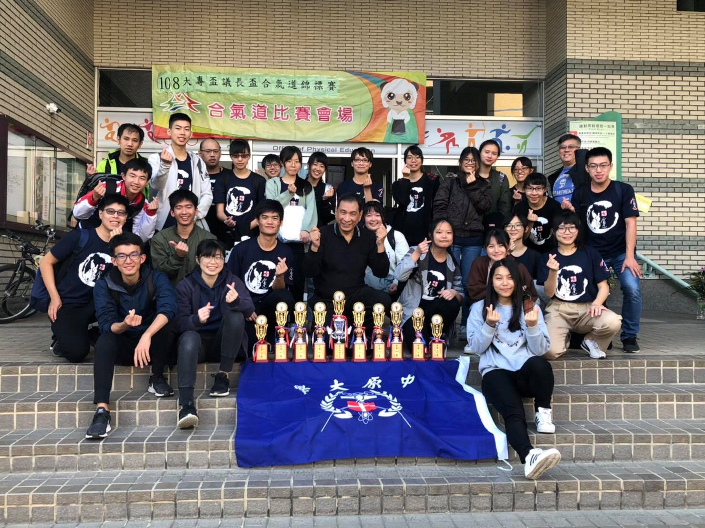

社團活動
|
登山健行
這是我們迎接新生正式上課以來的第一個活動，我們漫步於山間小路，行徑時讓老師、學長姐、新生們一起聊天、培養感情，藉由此項活動我們可以適當的鍛鍊身體，也順帶呼吸大自然的新鮮空氣。 |
|
|
聖誕活動
讓各位新生在練習之餘，也不忘與學長姐們輕鬆交流，除了體驗極具特色的異國文化，也能夠嘗試到歡度節慶、交換禮物的愉悅。 |
|
|
演武大會
促進各個道館間的交流與感情，見識不同流派技法的相異，相互學習彼此的優點，也增廣自我的武術、技法的知識。 |
|
|  |
大專盃
與不同大專院校進行武術上的交流，除了增加自我比賽的經驗外，也看看在不同地區，合氣道相異的多元性及發展的可能性。 |
|
中正盃
其為全國大型的正式比賽，除了可以凝聚社團的向心及團結力外，也為學校、社團、自己爭取榮譽，將獎盃帶回家。 |
|
|
迎新茶會
讓未了解、想要了解合氣道的新生們加深對合氣道的認識，也藉由此項活動來讓新生與學長姐彼此熟悉，協助他們更加清楚的明白自己是否想要加入社團。 |
|
|
寒訓暑訓
在寒暑訓中，我們可以體驗到與平常社課較為不同的課程，也能在這過程中學到較為實用的技法，除此之外，還會有多位已畢業的學長姐回來教授擁有他們自我風格的技法。 |
|
|
合保盃
合保盃，顧名思義：「合氣道保齡球盃」，為社團內自行舉辦的保齡球大賽，並非正式的比賽，有趣的是，我們還會藉由此項活動來選出一年一度的洗溝王及滿貫王。 |
|
|
社員大會
我們較為特別之處，便是擁有兩次的社員大會，社員可以選擇校外玩樂，也能夠選擇於學校舉辦各種有趣、好玩的活動，一方面聯繫社員間的感情，一方面也讓新生們感受到學長姐的熱情及溫暖。 |
|
|
送舊
歡送大四將畢業的學長姐們，感謝他們在這四年來的照顧、奉獻，和每一次用心的陪伴，有著中原合氣道社傳承的意味。 |
|
|
讀書會
我們社團除了鍛鍊體魄、體能、精神外，也重視課業上的精煉，常常會社員間齊聚一堂，不定時的舉辦讀書會，讓相異的、多樣的科系擁有專業知識相互交融碰撞的機會。 |
|
|
期中期末送宵
鄰近期中、期末時，為了讓努力、熬夜讀書的社員們擁有繼續奮鬥的動力，也讓大家明白除了練習外，我們也不會疏於課業，所以會於期中、期末考前一週送宵，藉此鼓勵社員。 |
|
|
自主練習
除了平常社課之外，社員間也會利用閒暇時間彼此相互相約出來一起練習，藉此更加精進自我的技法外，也加深社員間彼此的感情與默契。 |
|